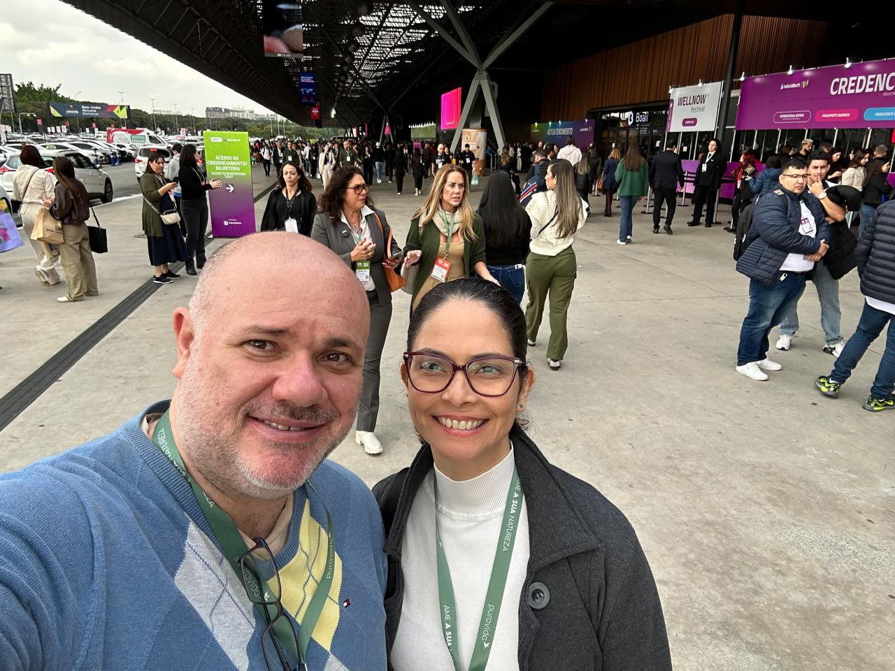
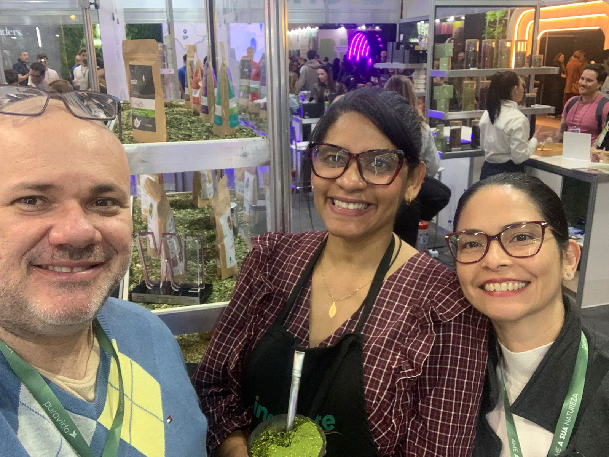

O que realmente nos chamou a atenção na NaturalTech 2026 — e por que isso importa para empresas que querem crescer.

Proteína em praticamente todas as categorias. *Clean Label* deixando de ser um diferencial para se tornar uma expectativa do consumidor. Pequenas marcas conquistando espaço com propósito e inovação.

Essa foi a principal impressão que tivemos ao visitar a NaturalTech 2026. Mais do que conhecer lançamentos, buscamos entender para onde o mercado está caminhando.
Estas foram as tendências que mais nos chamaram a atenção:
1.Proteína em novos espaços
A proteína deixou de ser um atributo voltado apenas ao universo esportivo. Além da tradicional whey protein e dos snacks, como barras, crispies e cups, vimos águas proteicas, cafés proteicos, sobremesas, bebidas prontas e ingredientes vegetais ricos em proteína.
Cada vez mais, ela faz parte da alimentação cotidiana, abrindo espaço para produtos funcionais e convenientes.
2.Clean Label como expectativa**
O consumidor quer mais do que um produto "natural". Ele quer entender a origem da matéria-prima, reconhecer os ingredientes, conhecer os processos produtivos e confiar nas certificações da marca.
Transparência deixou de ser um diferencial e passou a fazer parte da proposta de valor.
3.Bem-estar como ecossistema**
Alimentação saudável agora caminha ao lado de saúde mental, autocuidado, qualidade do sono, cosméticos naturais, performance e longevidade. O conceito de bem-estar está cada vez mais integrado.
4.Marcas com propósito**
Pequenas empresas, produtos regionais e marcas que contam uma história ganharam ainda mais destaque. O consumidor compra qualidade, mas também conexão, identidade e propósito.
5.Internacionalização como caminho de crescimento**
Exportação, certificações, adequação regulatória e acesso a mercados internacionais estiveram presentes em inúmeras conversas durante a feira. A internacionalização já faz parte da estratégia de empresas de diferentes portes.
Também foi motivo de orgulho ver nossa parceira **Inovamate** ser premiada na NaturalTech 2026, reforçando que inovação, sustentabilidade e identidade brasileira têm espaço e reconhecimento.
Saímos da feira com uma convicção ainda maior: empresas que unem inovação, transparência e propósito estarão mais preparadas para crescer, dentro e fora do Brasil.
É exatamente nesse caminho que a Nordosudo busca apoiar seus parceiros.
E você? Qual dessas tendências acredita que terá maior impacto nos próximos anos?